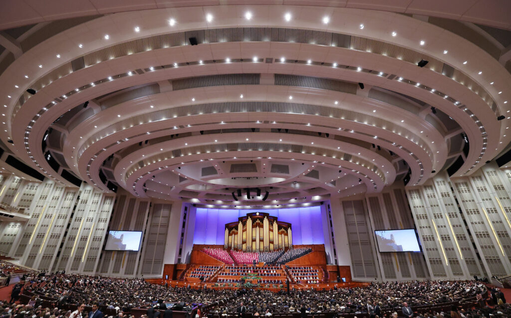

"The temple provides purpose for our lives" -Thomas S. Monson
April 2022 general conference: See a list of talk summaries, photo galleries and session highlights
Weather

9.4 °C
Clear sky
Wind speed: 1.5 km/h
Wind Chill: 281.86
How the Savior modeled service and community building for the latter days
The Lord invites people to be aware of the world and also be engaged in their communities, Bishop Caussé said during the International Society conference. Sister Eubank shared how this dual approach is working in Europe.
More news hereMake your reservation today, we will help you enjoy your temple experience. We will worry about the details
During his four-year tenure, President Russell M. Nelson has announced 100 new temple locations — and emphasized the importance of temple worship.
In general conference, Elder Uchtdorf said that like the widow who gave two mites, followers of Jesus Christ must offer everything they have, even their whole souls to Him.
In general conference, Elder Soares said that being in awe of Christ and His gospel helps one to be happier and more enthusiastic in God’s work.